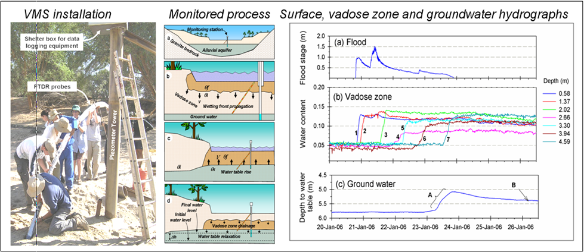
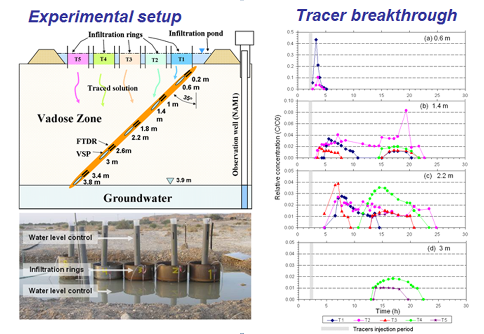
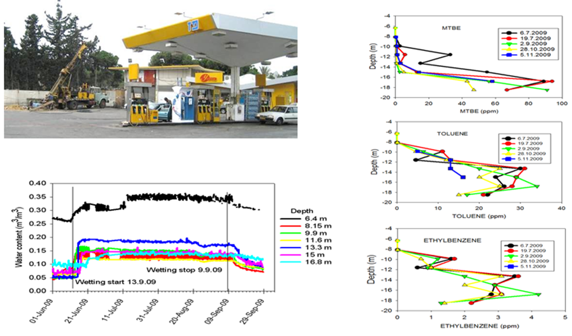
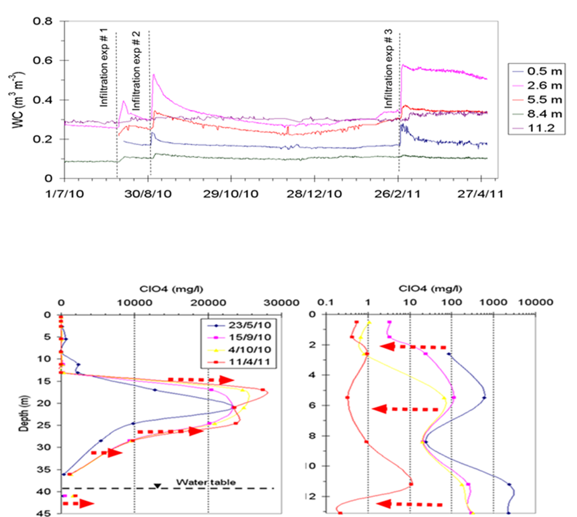
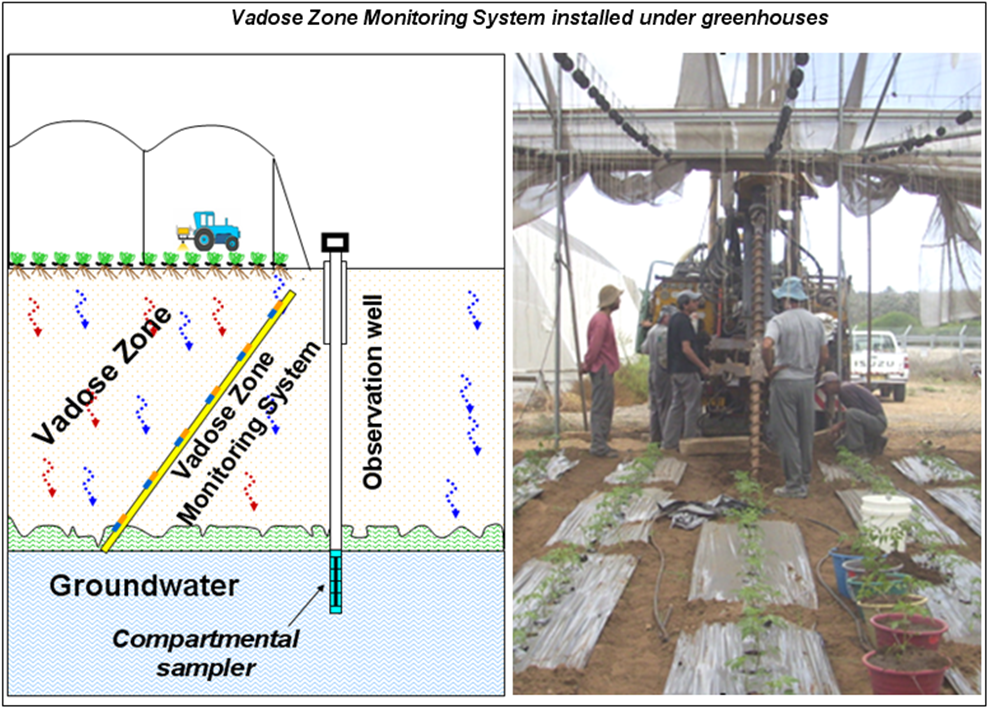

-
Dynamics of flood-water infiltration and groundwater recharge
Dynamics of flood-water infiltration and groundwater recharge was investigated using Vadose zone Monitoring systems which were installed under stream bed of ephemeral rivers and reservoirs.
Data that was collected by the VMS during each flood enabled direct calculation of the percolation flow velocities and infiltration fluxes.
(Dahan et al., 2007; Dahan et al., 2008; Dahan et al., 2009; Amiaz et al., 201).

-
In-situ monitoring of water percolation and tracers migration through the vadose zone
Water percolation and tracer migration through the vadose zone were studied through a multi-tracer experiment.
Frequent sampling of the vadose zone pore-water at multiple points by the VMS allowed establishment of tracer breakthrough curves at various depths
(Dahan et al., 2009. VZJ).

-
Optimization of Remediation Conditions using Vadose Zone Monitoring Technology
A vadose zone monitoring system that was installed under a gas station allowed accurate monitoring of the impact of remediation activities on the subsurface hydraulic and chemical conditions including: (1) temporal variation of the sediment water content, and (2) chemical and isotopic composition of the percolating water.
Results from each wetting cycles were used to improve the following wetting cycles in order to optimize the vadose zone conditions for microbial degradation of BTEX while minimizing leaching of contaminants to the groundwater.

-
Bioremediation of perchlorate in deep vadose zone
A study on enhance the biodegradation of perchlorate in the deep vadose zone was conducted through pilot scale experiment in a site that is heavily contaminated by perchlorate.
Monitoring of the direct impact of enhanced percolation on the actual hydraulic and chemical conditions in the vadose zone was achieved using a vadose zone monitoring system (VMS) which measured continuously the vadose zone water content and allowed frequent sampling of the sediment pore water across the entire vadose zone of the site (40 m).

-
Land use impact on groundwater quality
Land use impact on groundwater quality was investigated using Vadose zone Monitoring Systems which were installed across the vadose zone underlying various agricultural, urban and industrial setups.
The quality and quantity of the percolating water was measured continuously over several years and provided an early warning to potential pollution of groundwater by the various land uses.

-
Related publications
- Dahan, O., McDonald, E. and Young, M., 2003: Development of a flexible TDR probe for deep vadose zone monitoring. Vadose Zone Journal, 2: 270-275.
- Rimon, Y., Dahan, O., Nativ, R. and Geyer, S., 2007: Water percolation through the deep vadose zone and groundwater recharge: preliminary results based on a new vadose-zone monitoring system. Water Resources Research (43, W05402, doi:10.1029/2006WR004855).
- Dahan, O., Shani, Y., Enzel, Y., Yechieli, Y. and Yakirevich, A. 2007: Direct measurements of floodwater infiltration into shallow alluvial aquifers. Journal of Hydrology.
- Dahan, O., Tatarsky, B., Enzel, Y., Kulls, C., Seely, M. and Benito, G., 2008. Dynamics of flood water infiltration and ground water recharge in hyperarid desert. Groundwater, 46(3): 450-61.
- Sorek, A., N. Atzmon, O. Dahan, Z. Gerstl, L. Kushisin, Y. Laor, U. Mingelgrin, A. Nasser, D. Ronen, L. Tsechansky, N. Weisbrod, and E.R. Graber. 2008. "Phytoscreening": The use of trees for discovering subsurface contamination by vocs. Environ. Sci. Technol. 42:536-542.
- Dahan, O., R. Talby, Y. Yechieli, E. Adar, N. Lazarovitch, and Y. Enzel. 2009. In-situ monitoring of water percolation in layered soils using a vadose-zone monitoring system. Vadose zone Journal, 8 (4): 916-925.
- Rimon, Y., Nativ, R. and Dahan, O., 2010. Physical and chemical evidence for pore-scale dual domain flow in the vadose zone. Vadose zone Journal.
- Benito, G., Botero, B. A., Thorndycraft, V. R., Rico, M., Sánchez-Moya, Y., Sopeña, A., Machado, M. J., and Dahan, O., 2011: Rainfall-runoff modelling and palaeoflood hydrology applied to reconstruct centennial scale records of flooding and aquifer recharge in ungauged ephemeral rivers, Hydrol. Earth Syst. Sci., 15, 1185-1196, doi:10.5194/hess-15-1185-2011, 2011.
- Amiaz, Y., Sorek, S., Enzel, Y. and Dahan, O., 2011. Solute-transport in the vadose zone and ground water during flash floods. Water Resources Research.
- Baram, S., Arnon, S., Ronen, Z., Kurtzman, D. and Dahan, O., 2011. Water percolation through a clayey vadose zone. Journal of Hydrology.
- Baram, S., Arnon, S., Ronen, Z., Kurtzman, D. and Dahan, O., 2012. Infiltration mechanism controls nitrification and denitrification processes under dairy waste lagoon. Journal of Environmental Quality.